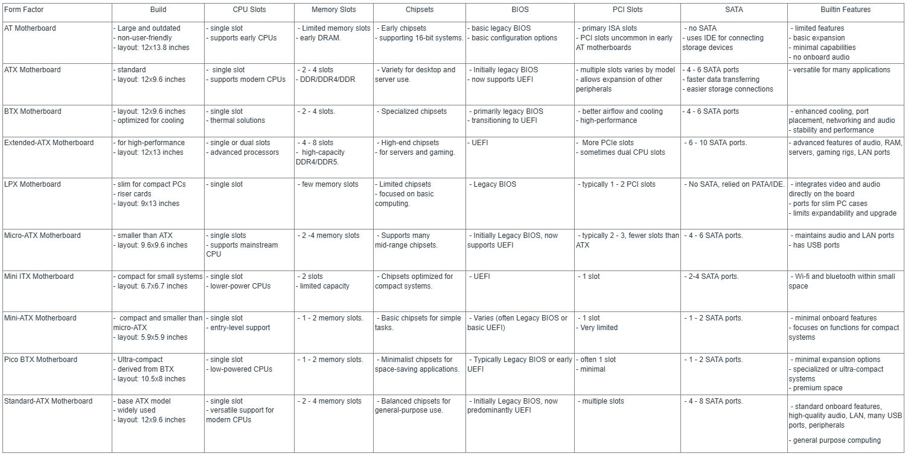

Motherboards
Motherboards have come a long way from the early days of computing.
According to Volle (2023), It is considered as the backbone of every
computer. Each motherboard varies in design, size, and especially
functionality which are tailored to satisfy or perform specific needs.
These may include compact systems, complex operations,
high-performance gaming servers, and many more. Selecting the right
motherboard for specific applications is very crucial which is
supported by the study of Paul (2021), thus, discussing these
different types of motherboards with various comparative studies is
necessary.
(1981) = IBM's 1981 motherboard
- The first modern motherboard appeared in IBM's Personal
Computer
- Originally called a "planar,"
- this revolutionary board housed the CPU, RAM, and basic audio,
(1984) - IBM AT (Advanced Technology)
- IBM introduced the AT motherboard
- became a major milestone for component-based PCs.
- The AT form factor was widely adopted by manufacturers,
(1987) - IBM's Baby AT
- Smaller, more case-friendly, and included I/O sockets,
becoming the most popular form factor.
- more compatible with cases and included sockets for I/O ports
(1987) - LPX (Low Profile eXtension)
- Compact alternative with limited adoption compared to Baby
AT.
- It featured a riser card to save space
- had ports arranged differently than AT boards.
MOTHERBOARDS: AT -> BTX -> E-ATX
= The AT motherboard was one of the first, but it’s old and too big
for today’s PCs.
= The ATX motherboard replaced it and became super popular because
it’s easier to use and works better with modern parts.
= The BTX motherboard was made for better cooling but didn’t catch
on much.
= The Extended-ATX (E-ATX) is bigger than ATX and great for
high-performance computers because it has more room for extra parts.
MOTHERBOARDS: LPX -> Micr-ATX -> Mini-ITX
= The LPX motherboard was small and used in older PCs but had poor
cooling and isn’t used anymore.
= The Micro-ATX motherboard is smaller than ATX but still works with
modern parts, making it good for budget PCs.
= The Mini-ITX motherboard is tiny and used for small builds like
home theater PCs, but it doesn’t have much room for upgrades.
MOTHERBOARDS: Mini-ATX -> Pico BTX -> Standard-ATX
= The Mini-ATX motherboard is rare and smaller than Micro-ATX,
mainly used for simple systems.
= The Pico BTX motherboard is super small and good for tight spaces
but doesn’t have many features.
= Lastly, the Standard-ATX motherboard is the most common because
it’s a good size and works well for most PCs.
Comparison Table of different model of Motherboards
